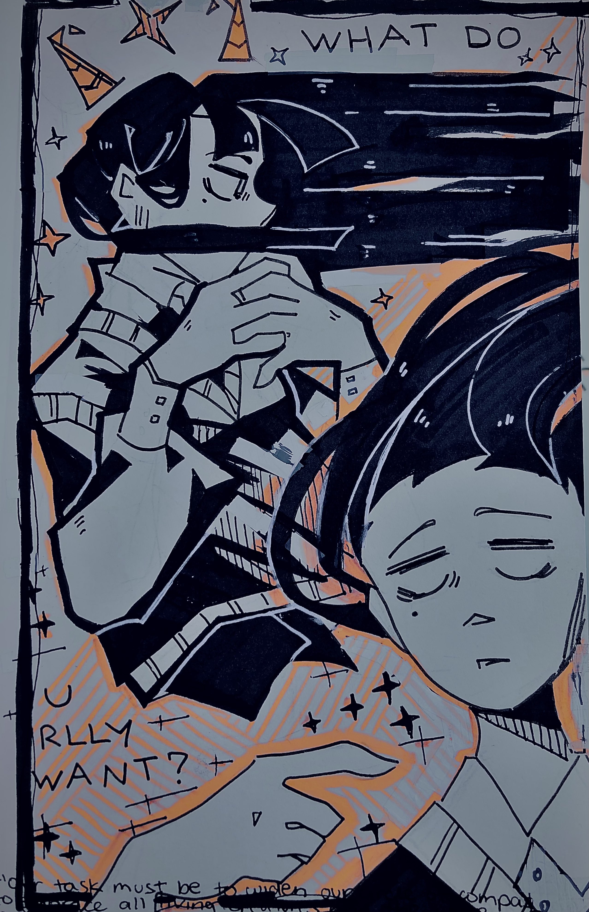
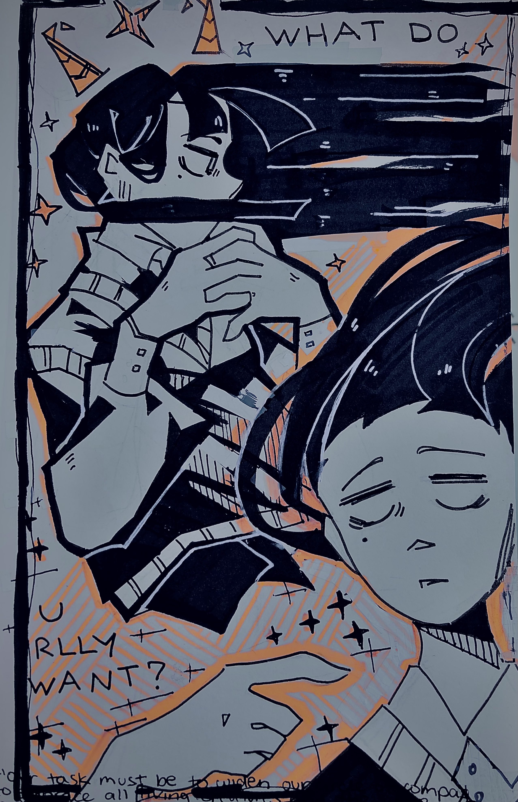

BARREN
creation date: december 2023
characters featured: burs
this was sometime before i started free-handing all my traditional art. the first drawing was actually the last fully sketched + purposefully lined artwork i drew in my sketchbook. the second art was my first attempt at free-handing, but it's obvious i haven't stepped outta my comfort zone yet at this point in time. too clean,,,,,
reference: